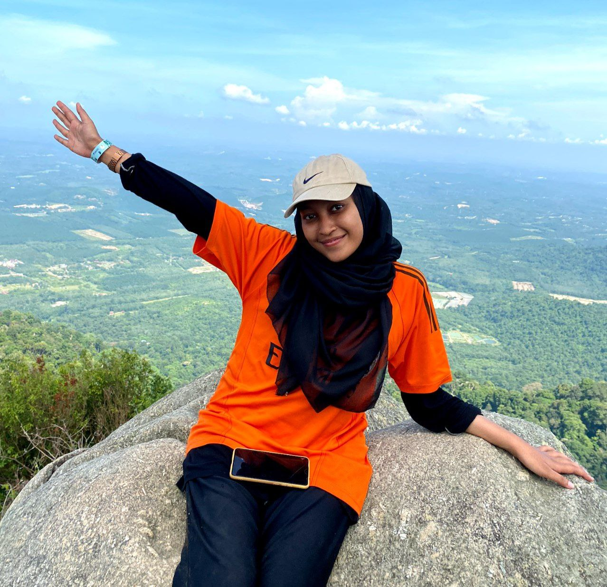
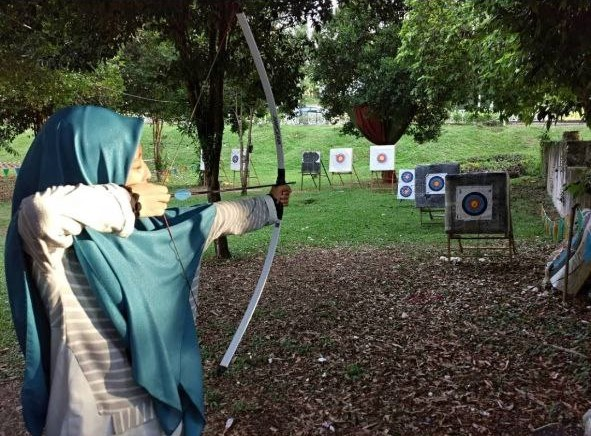
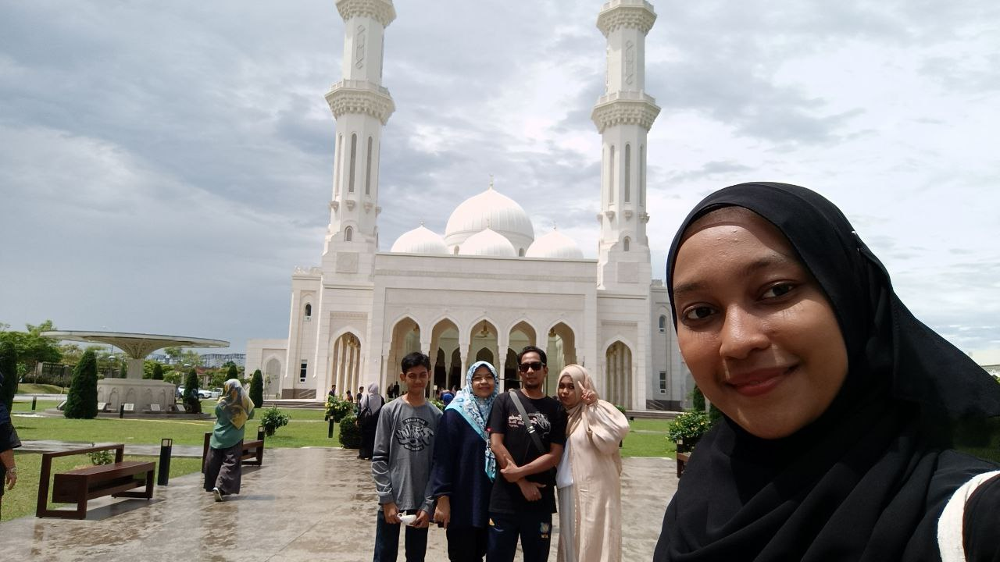
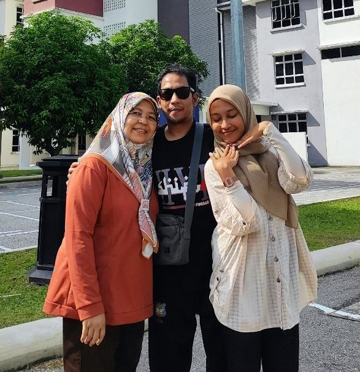

.png)

.png)
Name: Nur Nabilah Binti Muhammad Khairi
Place of birth: 2002, Ipoh, Perak
Status: Single
Work: A full-time student
 
Allow me to introduce myself. My name is Nur Nabilah Binti Muhammad Khairi. The second child of 3 siblings. Aged 21 years old. Alhamdulillah, infinite gratitude to Him for the opportunity to learn from me from childhood to adulthood. Starting from early education from home by mother and father. When I was 5 years old I started school at Tadika Seri Suria Pagi, Ipoh. Received primary education at Sekolah Kebangsaan Jelapang, Ipoh until grade 6, then received secondary education at Sekolah Menengah Kebangsaan Jati, Ipoh from form 1-5 and then continued my diploma studies at Universiti Teknologi Mara, Rembau and now, is working hard to finish my diploma studies and plans to continue to the Bachelor's Degree in Information Systems Management at Universiti Teknologi Mara, Puncak Perdana. Other than that, I love to play volleyball, archery, futsal and takraw. My family and I also love to fill our free time with hiking.
 
My family's photo
P/s: This blog just started operating in January 2023 and started its career with the blog named "Bella's Simple Life Diary" and focuses more on scientific material. After gaining strength, the writer also tried to write her own experience and sharing to be able to benefit together. The author tries to bring a more relaxed theme to be shared with all ages.